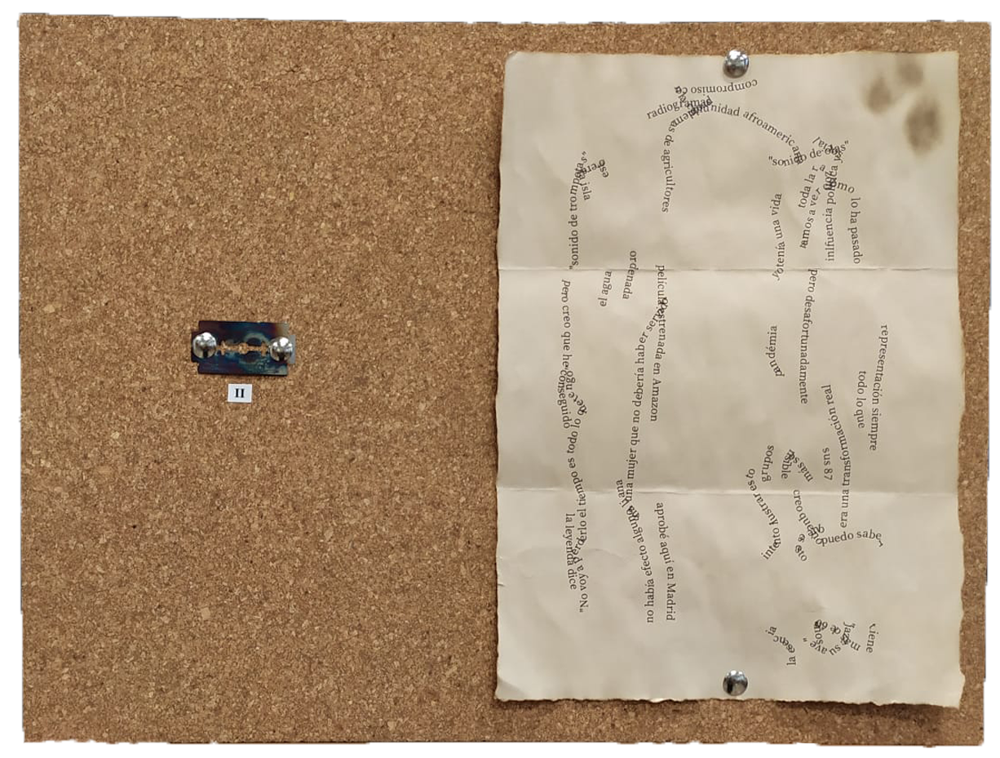
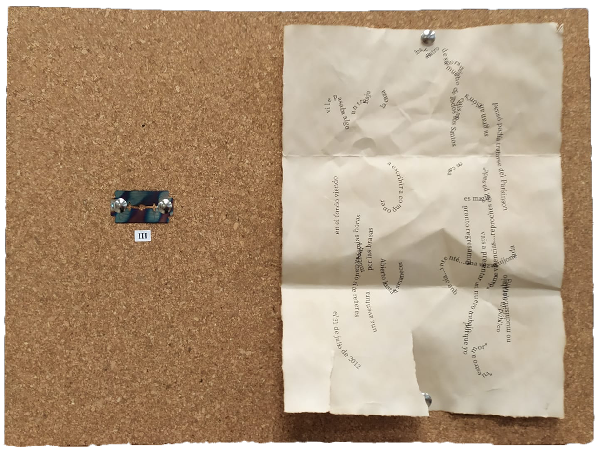
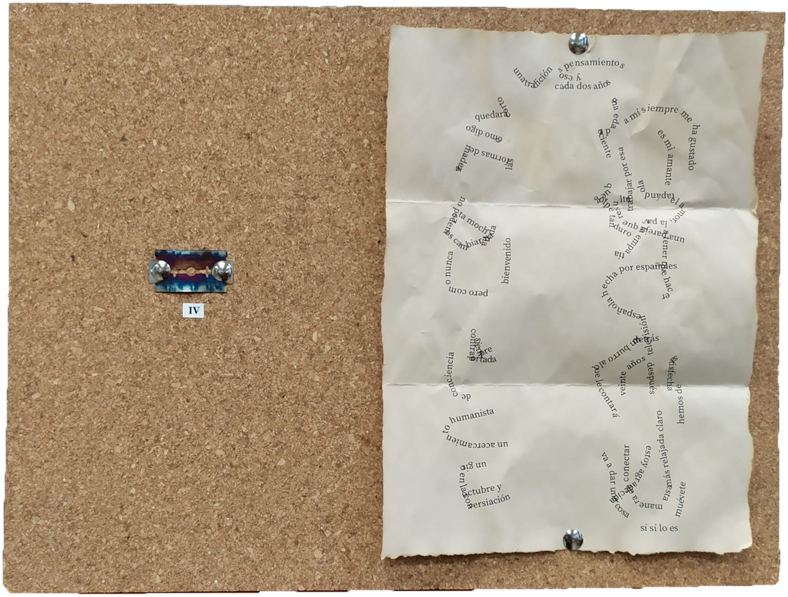
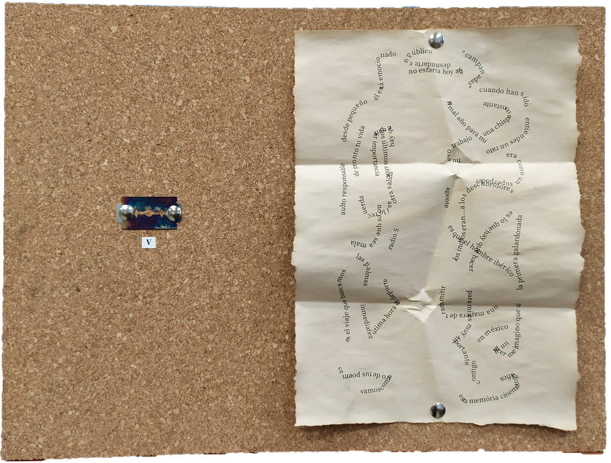

Foxhole Radio
Durante la II Guerra Mundial, los soldados en el frente utilizaban las foxhole radio, o radios de trinchera, para seguir recibiendo noticias del mundo exterior. Estas radios no necesitan alimentación, y cuentan con una característica hoja de afeitar llevada al rojo, que junto con un lápiz de grafito hacen la función de diodo para la radio. Las derivas del lápiz sobre la cuchilla y la voluntad frustrada de ser comunicado forman los motivos principales de Foxhole Radio.



